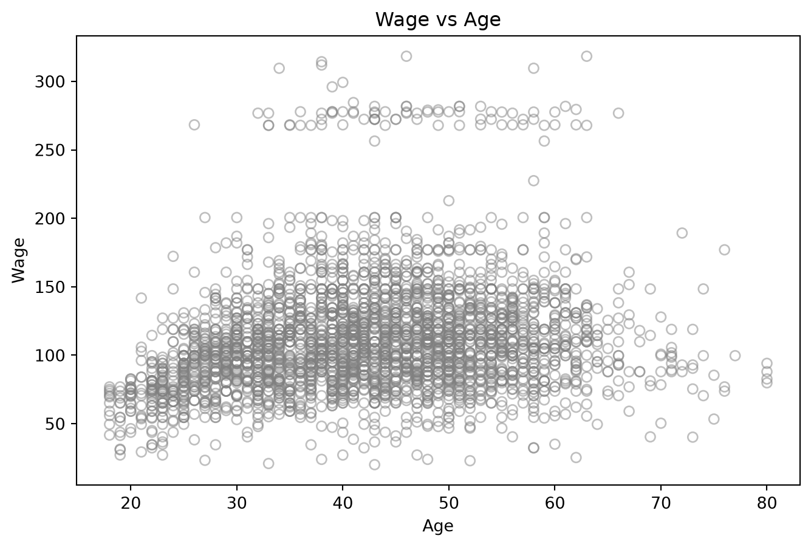
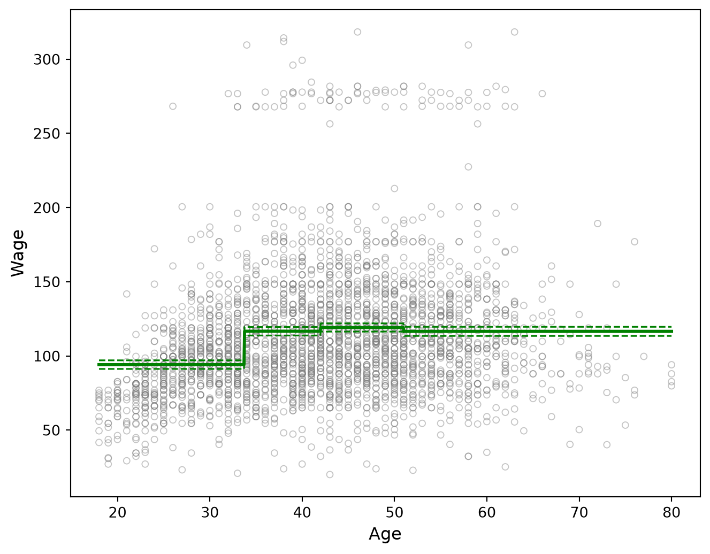
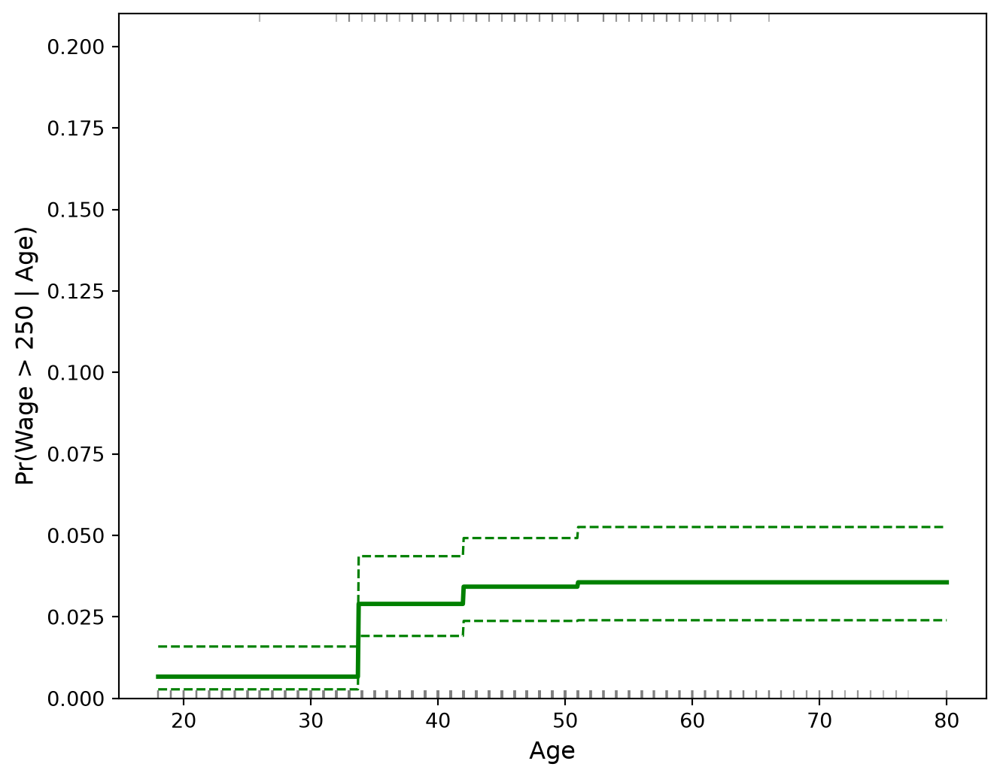

Código
import numpy as np
import pandas as pd
import matplotlib.pyplot as plt
import statsmodels.api as sm
from ISLP import load_dataEn esta práctica estudiaremos el uso de funciones escalonadas (step functions) para modelar relaciones no lineales entre una variable predictora y una variable respuesta.
Usaremos el conjunto de datos Wage de ISLP y analizaremos la relación entre la edad, age, y el salario, wage.
Hasta ahora hemos estudiado modelos como la regresión lineal
\[Y = \beta_0 + \beta_1 X + \varepsilon,\]
en los cuales suponemos que el efecto de \(X\) sobre la media de \(Y\) es lineal:
\[E[Y\mid X=x] = \beta_0+\beta_1x.\]
Sin embargo, muchas relaciones reales no son lineales.
Antes de introducir las funciones escalonadas, responde las siguientes preguntas.
Primero cargamos las bibliotecas que utilizaremos.
import numpy as np
import pandas as pd
import matplotlib.pyplot as plt
import statsmodels.api as sm
from ISLP import load_dataCargamos el conjunto de datos Wage.
Wage = load_data('Wage')
Wage.head()| year | age | maritl | race | education | region | jobclass | health | health_ins | logwage | wage | |
|---|---|---|---|---|---|---|---|---|---|---|---|
| 0 | 2006 | 18 | 1. Never Married | 1. White | 1. < HS Grad | 2. Middle Atlantic | 1. Industrial | 1. <=Good | 2. No | 4.318063 | 75.043154 |
| 1 | 2004 | 24 | 1. Never Married | 1. White | 4. College Grad | 2. Middle Atlantic | 2. Information | 2. >=Very Good | 2. No | 4.255273 | 70.476020 |
| 2 | 2003 | 45 | 2. Married | 1. White | 3. Some College | 2. Middle Atlantic | 1. Industrial | 1. <=Good | 1. Yes | 4.875061 | 130.982177 |
| 3 | 2003 | 43 | 2. Married | 3. Asian | 4. College Grad | 2. Middle Atlantic | 2. Information | 2. >=Very Good | 1. Yes | 5.041393 | 154.685293 |
| 4 | 2005 | 50 | 4. Divorced | 1. White | 2. HS Grad | 2. Middle Atlantic | 2. Information | 1. <=Good | 1. Yes | 4.318063 | 75.043154 |
Podemos revisar sus dimensiones:
Wage.shape(3000, 11)y algunas estadísticas descriptivas:
Wage.describe()| year | age | logwage | wage | |
|---|---|---|---|---|
| count | 3000.000000 | 3000.000000 | 3000.000000 | 3000.000000 |
| mean | 2005.791000 | 42.414667 | 4.653905 | 111.703608 |
| std | 2.026167 | 11.542406 | 0.351753 | 41.728595 |
| min | 2003.000000 | 18.000000 | 3.000000 | 20.085537 |
| 25% | 2004.000000 | 33.750000 | 4.447158 | 85.383940 |
| 50% | 2006.000000 | 42.000000 | 4.653213 | 104.921507 |
| 75% | 2008.000000 | 51.000000 | 4.857332 | 128.680488 |
| max | 2009.000000 | 80.000000 | 5.763128 | 318.342430 |
Para esta práctica utilizaremos únicamente:
age = Wage['age']
wage = Wage['wage']La variable predictora será
\[X=Age\]
y la respuesta será
\[Y=Wage.\]
Antes de construir un modelo, observemos la relación entre ambas variables.
plt.figure(figsize=(8, 5))
plt.scatter(
age,
wage,
facecolor='none',
edgecolor='gray',
alpha=0.5
)
plt.xlabel('Age')
plt.ylabel('Wage')
plt.title('Wage vs Age')
plt.show()
Una forma sencilla de introducir no linealidad consiste en dividir el rango de \(X\) en diferentes regiones.
Supongamos que dividimos la edad en cuatro intervalos:
\[C_0,\quad C_1,\quad C_2,\quad C_3.\]
Para cada intervalo construimos una variable indicadora.
Por ejemplo,
\[C_1(x)= \begin{cases} 1, & x\in C_1,\\ 0, & x\notin C_1. \end{cases}\]
De manera similar construimos \(C_0(x)\), \(C_2(x)\) y \(C_3(x)\).
Podemos entonces escribir un modelo como
\[Y= \beta_0+ \beta_1C_1(X) +\beta_2C_2(X) +\beta_3C_3(X) +\varepsilon.\]
Si vamos a considerar primero el intercepto.
Si una observación pertenece al grupo \(C_2\), entonces
\[C_1(X)=0,\qquad C_2(X)=1,\qquad C_3(X)=0\]
Por tanto,
\[Y=\beta_2+\varepsilon.\]
El valor ajustado será constante dentro de cada intervalo.
De ahí proviene el nombre función escalonada.
age utilizando cuantilesEl enfoque utilizado en ISLP consiste en dividir age en cuatro grupos utilizando cuantiles.
# retbins=True devuelve también los puntos de corte
age_cut, cut_points = pd.qcut(
age,
q=4,
retbins=True
)
print("Puntos de corte:")
print(cut_points)Puntos de corte:
[18. 33.75 42. 51. 80. ]La función
pd.qcut(age, 4)divide los datos en cuatro grupos intentando colocar aproximadamente el mismo número de observaciones en cada uno.
Es importante distinguir entre:
pd.cut()y
pd.qcut()pd.cut() generalmente divide el rango de valores, mientras que pd.qcut() divide las observaciones según cuantiles.
Podemos ver cuantos datos caen en cada intervalo:
print("\nNúmero de observaciones por grupo:")
print(age_cut.value_counts().sort_index())
Número de observaciones por grupo:
age
(17.999, 33.75] 750
(33.75, 42.0] 759
(42.0, 51.0] 817
(51.0, 80.0] 674
Name: count, dtype: int64Podemos consultar los intervalos generados:
age_cut.cat.categoriesIntervalIndex([(17.999, 33.75], (33.75, 42.0], (42.0, 51.0], (51.0, 80.0]], dtype='interval[float64, right]')También podemos contar cuántas observaciones pertenecen a cada grupo:
age_cut.value_counts().sort_index()age
(17.999, 33.75] 750
(33.75, 42.0] 759
(42.0, 51.0] 817
(51.0, 80.0] 674
Name: count, dtype: int64Ahora convertimos los cuatro intervalos en variables indicadoras.
X_cat = pd.get_dummies(
age_cut,
drop_first=True
).astype(float)
X = sm.add_constant(X_cat)
print("\nMatriz de diseño:")
print(X.head())
Matriz de diseño:
const (33.75, 42.0] (42.0, 51.0] (51.0, 80.0]
0 1.0 0.0 0.0 0.0
1 1.0 0.0 0.0 0.0
2 1.0 0.0 1.0 0.0
3 1.0 0.0 1.0 0.0
4 1.0 0.0 1.0 0.0La función
pd.get_dummies()realiza una codificación one-hot.
Una observación podría quedar representada como
\[(1,0,0,0),\]
otra como
\[(0,1,0,0),\]
etc.
Cada fila tiene exactamente un valor igual a \(1\).
Podemos revisar los nombres de las columnas:
X_cat.columnsCategoricalIndex([(33.75, 42.0], (42.0, 51.0], (51.0, 80.0]], categories=[(17.999, 33.75], (33.75, 42.0], (42.0, 51.0], (51.0, 80.0]], ordered=True, dtype='category')y las dimensiones de la matriz:
X_cat.shape(3000, 3)En muchos problemas de regresión se utiliza:
Pero también podemos:
Esto es perfectamente válido.
Tendríamos
\[C_1+C_2+C_3+C_4=1.\]
Si agregáramos además un intercepto, tendríamos dependencia lineal perfecta.
Por tanto, existen dos parametrizaciones posibles.
Intercepto y tres variables indicadoras:
\[Y= \beta_0+ \beta_1C_1+ \beta_2C_2+ \beta_3C_3+ \varepsilon.\]
Aquí uno de los grupos funciona como referencia.
Sin intercepto y con cuatro variables indicadoras:
\[Y= \beta_1C_1+ \beta_2C_2+ \beta_3C_3+ \beta_4C_4+ \varepsilon.\]
Ajustamos ahora el modelo
\[Wage= \beta_0+ \beta_1C_1(Age) +\beta_2C_2(Age) +\beta_3C_3(Age) +\varepsilon.\]
Utilizamos:
modelo_ls = sm.OLS(wage, X).fit()
print("\n=== Regresión por mínimos cuadrados ===")
print(modelo_ls.summary())
=== Regresión por mínimos cuadrados ===
OLS Regression Results
==============================================================================
Dep. Variable: wage R-squared: 0.060
Model: OLS Adj. R-squared: 0.059
Method: Least Squares F-statistic: 63.30
Date: Mon, 07 Sep 2026 Prob (F-statistic): 1.12e-39
Time: 11:45:27 Log-Likelihood: -15358.
No. Observations: 3000 AIC: 3.072e+04
Df Residuals: 2996 BIC: 3.075e+04
Df Model: 3
Covariance Type: nonrobust
=================================================================================
coef std err t P>|t| [0.025 0.975]
---------------------------------------------------------------------------------
const 94.1584 1.478 63.692 0.000 91.260 97.057
(33.75, 42.0] 22.5024 2.084 10.795 0.000 18.415 26.590
(42.0, 51.0] 25.0303 2.047 12.226 0.000 21.016 29.045
(51.0, 80.0] 22.4133 2.149 10.431 0.000 18.200 26.627
==============================================================================
Omnibus: 1062.319 Durbin-Watson: 1.962
Prob(Omnibus): 0.000 Jarque-Bera (JB): 4546.061
Skew: 1.681 Prob(JB): 0.00
Kurtosis: 8.006 Cond. No. 4.80
==============================================================================
Notes:
[1] Standard Errors assume that the covariance matrix of the errors is correctly specified.La función
sm.OLS(y, X)define un modelo de regresión por mínimos cuadrados ordinarios.
OLS significa Ordinary Least Squares.
La instrucción
.fit()estima los parámetros del modelo.
Podemos consultar directamente los coeficientes:
modelo_ls.paramsconst 94.158392
(33.75, 42.0] 22.502418
(42.0, 51.0] 25.030273
(51.0, 80.0] 22.413324
dtype: float64Con cuatro grupos de edad y tomando el primer grupo, \(C_0\), como categoría de referencia, el modelo es
\[Wage_i = \beta_0 + \beta_1C_1(Age_i) + \beta_2C_2(Age_i) + \beta_3C_3(Age_i) + \varepsilon_i.\]
Aquí \(C_1\), \(C_2\) y \(C_3\) son variables indicadoras para los grupos distintos al de referencia.
Si una persona pertenece al grupo \(C_0\), entonces
\[C_1=C_2=C_3=0.\]
Por tanto, el valor ajustado es
\[\hat Y=\hat\beta_0.\]
Así,
\[\boxed{ \hat\beta_0 = \text{media estimada de }Wage\text{ en el grupo de referencia} }\]
Si una persona pertenece al grupo \(C_1\), entonces
\[C_1=1, \qquad C_2=C_3=0.\]
El valor ajustado es
\[\hat Y = \hat\beta_0+\hat\beta_1.\]
Por tanto,
\[\boxed{ \hat\beta_0+\hat\beta_1 = \text{media estimada de }Wage\text{ en el grupo }C_1 }\]
y, equivalentemente,
\[\boxed{ \hat\beta_1 = \bar Y_{C_1}-\bar Y_{C_0} }\]
Es decir, \(\hat\beta_1\) representa la diferencia entre la media del grupo \(C_1\) y la media del grupo de referencia.
De manera análoga,
\[\hat\beta_0+\hat\beta_2 = \bar Y_{C_2},\]
y
\[\hat\beta_0+\hat\beta_3 = \bar Y_{C_3}.\]
Por tanto,
\[\hat\beta_2 = \bar Y_{C_2}-\bar Y_{C_0},\]
y
\[\hat\beta_3 = \bar Y_{C_3}-\bar Y_{C_0}.\]
En resumen,
\[\boxed{ \hat\beta_0=\bar Y_{C_0} }\]
y para \(j=1,2,3\),
\[\boxed{ \hat\beta_j = \bar Y_{C_j} - \bar Y_{C_0} }\]
Los coeficientes tienen entonces una interpretación muy directa:
Podemos calcular directamente el salario promedio de cada grupo.
medias_grupos = (
Wage
.assign(grupo_edad=age_cut)
.groupby('grupo_edad', observed=True)['wage']
.mean()
)
medias_gruposgrupo_edad
(17.999, 33.75] 94.158392
(33.75, 42.0] 116.660810
(42.0, 51.0] 119.188665
(51.0, 80.0] 116.571716
Name: wage, dtype: float64Ahora observemos los coeficientes del modelo:
modelo_ls.paramsconst 94.158392
(33.75, 42.0] 22.502418
(42.0, 51.0] 25.030273
(51.0, 80.0] 22.413324
dtype: float64En este caso, los coeficientes no coinciden directamente con las cuatro medias.
El intercepto coincide con la media del grupo de referencia:
media_ref = medias_grupos.iloc[0]
media_refnp.float64(94.15839203351904)y debe cumplirse aproximadamente que
modelo_ls.params.iloc[0]np.float64(94.15839203351882)sea igual a media_ref.
Para recuperar la media del segundo grupo debemos sumar
modelo_ls.params.iloc[0] + modelo_ls.params.iloc[1]np.float64(116.66080999753618)Para el tercer grupo:
modelo_ls.params.iloc[0] + modelo_ls.params.iloc[2]np.float64(119.188664863958)Y para el cuarto:
modelo_ls.params.iloc[0] + modelo_ls.params.iloc[3]np.float64(116.57171602093007)Podemos comprobar todas las medias a la vez:
medias_desde_modelo = pd.Series(
[
modelo_ls.params.iloc[0],
modelo_ls.params.iloc[0] + modelo_ls.params.iloc[1],
modelo_ls.params.iloc[0] + modelo_ls.params.iloc[2],
modelo_ls.params.iloc[0] + modelo_ls.params.iloc[3]
],
index=medias_grupos.index
)
medias_desde_modelogrupo_edad
(17.999, 33.75] 94.158392
(33.75, 42.0] 116.660810
(42.0, 51.0] 119.188665
(51.0, 80.0] 116.571716
dtype: float64Comparemos:
pd.DataFrame({
'Media observada': medias_grupos,
'Media desde el modelo': medias_desde_modelo
})| Media observada | Media desde el modelo | |
|---|---|---|
| grupo_edad | ||
| (17.999, 33.75] | 94.158392 | 94.158392 |
| (33.75, 42.0] | 116.660810 | 116.660810 |
| (42.0, 51.0] | 119.188665 | 119.188665 |
| (51.0, 80.0] | 116.571716 | 116.571716 |
Los valores deben coincidir salvo pequeñas diferencias numéricas de redondeo.
summary() del modelo de mínimos cuadradosVeamos ahora el resumen completo del modelo.
print(modelo_ls.summary()) OLS Regression Results
==============================================================================
Dep. Variable: wage R-squared: 0.060
Model: OLS Adj. R-squared: 0.059
Method: Least Squares F-statistic: 63.30
Date: Mon, 07 Sep 2026 Prob (F-statistic): 1.12e-39
Time: 11:45:27 Log-Likelihood: -15358.
No. Observations: 3000 AIC: 3.072e+04
Df Residuals: 2996 BIC: 3.075e+04
Df Model: 3
Covariance Type: nonrobust
=================================================================================
coef std err t P>|t| [0.025 0.975]
---------------------------------------------------------------------------------
const 94.1584 1.478 63.692 0.000 91.260 97.057
(33.75, 42.0] 22.5024 2.084 10.795 0.000 18.415 26.590
(42.0, 51.0] 25.0303 2.047 12.226 0.000 21.016 29.045
(51.0, 80.0] 22.4133 2.149 10.431 0.000 18.200 26.627
==============================================================================
Omnibus: 1062.319 Durbin-Watson: 1.962
Prob(Omnibus): 0.000 Jarque-Bera (JB): 4546.061
Skew: 1.681 Prob(JB): 0.00
Kurtosis: 8.006 Cond. No. 4.80
==============================================================================
Notes:
[1] Standard Errors assume that the covariance matrix of the errors is correctly specified.El summary() contiene información sobre:
En este caso debemos recordar que estamos utilizando una parametrización con:
El modelo es
\[Wage_i = \beta_0 + \beta_1C_1(Age_i) + \beta_2C_2(Age_i) + \beta_3C_3(Age_i) + \varepsilon_i.\]
En la parte superior aparecen elementos como:
Dep. Variable
Model
Method
No. ObservationsDep. Variable indica la variable respuesta.
En nuestro caso es wage.
Model: OLS indica que se ha utilizado regresión por mínimos cuadrados ordinarios.
Method: Least Squares indica que los coeficientes fueron estimados minimizando la suma de cuadrados de los residuos.
No. Observations representa el número total de observaciones utilizadas para ajustar el modelo.
La parte más importante del summary() es la tabla que contiene:
coef
std err
t
P>|t|
[0.025
0.975]La columna
coefcontiene las estimaciones
\[\hat\beta_0,\hat\beta_1,\hat\beta_2,\hat\beta_3.\]
Sin embargo, con esta parametrización los coeficientes no representan todos directamente medias de grupo.
El coeficiente const corresponde a
\[\hat\beta_0.\]
Como el primer grupo es la categoría de referencia,
\[\boxed{ \hat\beta_0 = \bar Y_{C_0} }\]
es decir, el intercepto representa el salario medio estimado del grupo de referencia.
En nuestros datos obtenemos aproximadamente
\[\hat\beta_0=94.16.\]
Por tanto, el salario medio estimado para las personas del primer intervalo de edad es aproximadamente \(94.16\).
Para los demás grupos,
\[\boxed{ \hat\beta_j = \bar Y_{C_j} - \bar Y_{C_0} }\]
para \(j=1,2,3\).
Es decir, cada coeficiente representa la diferencia entre la media del grupo correspondiente y la media del grupo de referencia.
Por ejemplo, si
\[\hat\beta_1=22.50,\]
esto significa que el salario medio del segundo grupo es aproximadamente \(22.50\) unidades mayor que el salario medio del grupo de referencia.
La media estimada del segundo grupo es entonces
\[\hat\beta_0+\hat\beta_1.\]
En nuestros datos,
\[94.16+22.50 \approx 116.66.\]
De manera análoga,
\[\hat\mu_2 = \hat\beta_0+\hat\beta_2\]
y
\[\hat\mu_3 = \hat\beta_0+\hat\beta_3.\]
La columna
std errcontiene el error estándar asociado con cada coeficiente estimado.
Para el intercepto,
\[SE(\hat\beta_0)\]
mide la incertidumbre asociada con la estimación de la media del grupo de referencia.
Para \(j=1,2,3\),
\[SE(\hat\beta_j)\]
mide la incertidumbre asociada con la estimación de la diferencia
\[\bar Y_{C_j}-\bar Y_{C_0}.\]
Por tanto, en esta parametrización el error estándar de una dummy no es directamente el error estándar de la media del grupo, sino el error estándar de la diferencia respecto al grupo de referencia.
Cuanto menor sea el error estándar, mayor será la precisión de la estimación correspondiente.
tLa columna
tse calcula como
\[t = \frac{\hat\beta_j-0} {SE(\hat\beta_j)}.\]
Por tanto, el contraste es
\[H_0:\beta_j=0\]
contra
\[H_1:\beta_j\neq0.\]
Sin embargo, la interpretación depende del parámetro que estemos observando.
El contraste
\[H_0:\beta_0=0\]
equivale a preguntar si la media salarial del grupo de referencia es igual a cero.
Es decir,
\[H_0:\mu_0=0.\]
Esta hipótesis no suele ser especialmente interesante en este problema.
Para \(j=1,2,3\),
\[\beta_j = \mu_j-\mu_0.\]
Por tanto,
\[H_0:\beta_j=0\]
equivale a
\[H_0:\mu_j-\mu_0=0,\]
o simplemente
\[\boxed{ H_0:\mu_j=\mu_0 }\]
Así, el estadístico \(t\) de cada dummy sí permite comparar directamente la media del grupo correspondiente con la media del grupo de referencia.
La columna
P>|t|contiene el p-value asociado con cada contraste
\[H_0:\beta_j=0.\]
Para const, el contraste se refiere a la media del grupo de referencia.
Para las variables indicadoras, el contraste compara cada grupo con la categoría de referencia.
Si statsmodels muestra
0.000no significa que el p-value sea exactamente cero.
Significa que es suficientemente pequeño como para aparecer redondeado a tres decimales.
Las columnas
[0.025, 0.975]forman un intervalo de confianza del 95% para cada parámetro.
Para el intercepto obtenemos
\[IC_{95\%}(\beta_0),\]
que corresponde a un intervalo para la media del grupo de referencia.
Para las variables indicadoras obtenemos
\[IC_{95\%}(\beta_j),\]
pero recuerden que
\[\beta_j = \mu_j-\mu_0.\]
Por tanto, estos intervalos son intervalos de confianza para la diferencia entre la media del grupo \(j\) y la media del grupo de referencia.
No son directamente intervalos de confianza para la media del grupo \(j\).
Por ejemplo, la media del grupo \(C_1\) es
\[\mu_1 = \beta_0+\beta_1.\]
No debemos obtener su intervalo de confianza simplemente sumando los extremos de los intervalos de \(\beta_0\) y \(\beta_1\).
La incertidumbre de una combinación lineal depende también de la covarianza entre los estimadores.
Una forma correcta de obtenerla con statsmodels es mediante un contraste lineal.
Por ejemplo, para estimar
\[\beta_0+\beta_1,\]
podemos utilizar:
modelo_ls.t_test([1, 1, 0, 0])<class 'statsmodels.stats.contrast.ContrastResults'>
Test for Constraints
==============================================================================
coef std err t P>|t| [0.025 0.975]
------------------------------------------------------------------------------
c0 116.6608 1.470 79.385 0.000 113.779 119.542
==============================================================================Para
\[\beta_0+\beta_2,\]
utilizamos:
modelo_ls.t_test([1, 0, 1, 0])<class 'statsmodels.stats.contrast.ContrastResults'>
Test for Constraints
==============================================================================
coef std err t P>|t| [0.025 0.975]
------------------------------------------------------------------------------
c0 119.1887 1.416 84.147 0.000 116.411 121.966
==============================================================================y para
\[\beta_0+\beta_3,\]
modelo_ls.t_test([1, 0, 0, 1])<class 'statsmodels.stats.contrast.ContrastResults'>
Test for Constraints
==============================================================================
coef std err t P>|t| [0.025 0.975]
------------------------------------------------------------------------------
c0 116.5717 1.559 74.751 0.000 113.514 119.629
==============================================================================El resumen también contiene el coeficiente de determinación.
En un modelo con intercepto,
\[R^2 = 1- \frac{RSS}{TSS},\]
donde
\[RSS = \sum_{i=1}^{n} (y_i-\hat y_i)^2\]
es la suma de cuadrados residual, y
\[TSS = \sum_{i=1}^{n} (y_i-\bar y)^2\]
es la suma total de cuadrados.
El \(R^2\) mide la proporción de la variabilidad observada en wage que es explicada por el modelo.
En este caso, la única información que utilizamos de age es el grupo de edad al que pertenece cada persona.
Por tanto, conceptualmente estamos preguntando:
¿Qué proporción de la variabilidad del salario puede explicarse al conocer únicamente el cuartil de edad?
Un valor bajo de \(R^2\) no implica necesariamente que el modelo sea incorrecto.
Simplemente indica que conocer el grupo de edad explica solamente una parte de la variabilidad total del salario.
Esto es razonable, ya que el salario puede depender de muchas otras variables además de la edad.
El summary() también reporta
Adj. R-squaredo \(R^2\) ajustado.
El \(R^2\) ordinario nunca disminuye al agregar predictores al modelo, incluso si esos predictores aportan muy poca información.
El \(R^2\) ajustado introduce una penalización por el número de parámetros:
\[R^2_{\text{adj}} = 1 - (1-R^2) \frac{n-1}{n-p-1},\]
donde \(n\) es el número de observaciones y \(p\) es el número de predictores, sin contar el intercepto.
Por ello, puede ser más útil cuando queremos comparar modelos con diferente número de variables.
F-statistic y Prob (F-statistic)El resumen también muestra
F-statistic
Prob (F-statistic)La prueba \(F\) evalúa globalmente si las variables indicadoras asociadas con los grupos de edad aportan información al modelo.
En este caso, la hipótesis nula es
\[H_0: \beta_1=\beta_2=\beta_3=0.\]
Como
\[\beta_j=\mu_j-\mu_0,\]
esta hipótesis equivale a
\[H_0: \mu_0=\mu_1=\mu_2=\mu_3.\]
Es decir, la prueba \(F\) pregunta:
¿Hay evidencia de que al menos uno de los grupos de edad tenga un salario medio diferente?
La hipótesis alternativa es que al menos uno de los coeficientes sea distinto de cero.
Para visualizar el modelo construiremos una secuencia de edades.
age_grid = np.linspace(
age.min(),
age.max(),
1000
)En nuestro caso generamos \(1000\) edades entre la edad mínima y máxima del conjunto de datos.
Es importante notar que age_grid no contiene nuevas observaciones reales. Es simplemente una secuencia de valores que utilizaremos para evaluar el modelo y poder dibujar la función ajustada.
Las nuevas edades deben utilizar exactamente los mismos puntos de corte que fueron calculados con los datos originales.
Cuando construimos los cuatro grupos utilizamos:
age_cut, cut_points = pd.qcut(
age,
q=4,
retbins=True
)La opción
retbins=Truepermite guardar también los puntos de corte utilizados para construir los cuartiles.
Podemos verlos mediante:
cut_pointsarray([18. , 33.75, 42. , 51. , 80. ])Ahora clasificamos cada valor de age_grid utilizando esos mismos puntos de corte:
cut_age_grid = pd.cut(
age_grid,
bins=cut_points,
include_lowest=True
)Aquí utilizamos pd.cut() porque ya conocemos los puntos de corte.
No queremos calcular nuevos cuantiles. Solamente queremos preguntar:
¿A cuál de los cuatro grupos originales pertenece cada nueva edad?
Recordemos que nuestro modelo original utiliza:
Por tanto, debemos construir X_grid exactamente de la misma manera que construimos X.
Primero generamos las variables indicadoras eliminando la primera categoría:
X_grid_cat = pd.get_dummies(
cut_age_grid,
drop_first=True
).astype(float)Después garantizamos que las columnas sean exactamente las mismas que las utilizadas durante el ajuste:
X_grid_cat = X_grid_cat.reindex(
columns=X_cat.columns,
fill_value=0
)Finalmente agregamos el intercepto:
X_grid = sm.add_constant(
X_grid_cat,
has_constant='add'
)y aseguramos el mismo orden de columnas:
X_grid = X_grid[X.columns]La matriz X_grid tendrá una estructura similar a:
const C1 C2 C3
1 0 0 0
1 0 0 0
1 1 0 0
1 1 0 0
1 0 1 0
...Cada fila representa una edad de age_grid.
Obtenemos las predicciones mediante:
pred_ls = modelo_ls.get_prediction(
X_grid
)
media_ls = pred_ls.predicted_meanLa función
get_prediction()permite obtener no solamente las predicciones del modelo, sino también información acerca de su incertidumbre.
La cantidad
pred_ls.predicted_meancontiene las estimaciones de
\[E[Wage\mid Age].\]
Nuestro modelo es
\[Wage_i = \beta_0 + \beta_1C_1(Age_i) + \beta_2C_2(Age_i) + \beta_3C_3(Age_i) + \varepsilon_i.\]
Por tanto, la función ajustada es
\[\hat f(x) = \widehat{E}[Wage\mid Age=x].\]
Como el primer grupo, \(C_0\), es la categoría de referencia, la predicción depende del intervalo al que pertenezca \(x\).
Para el grupo de referencia:
\[\hat f(x) = \hat\beta_0.\]
Para el grupo \(C_1\):
\[\hat f(x) = \hat\beta_0+\hat\beta_1.\]
Para el grupo \(C_2\):
\[\hat f(x) = \hat\beta_0+\hat\beta_2.\]
Y para el grupo \(C_3\):
\[\hat f(x) = \hat\beta_0+\hat\beta_3.\]
En conjunto,
\[\hat E[Wage\mid Age=x] = \begin{cases} \hat\beta_0, & x\in C_0,\\ \hat\beta_0+\hat\beta_1, & x\in C_1,\\ \hat\beta_0+\hat\beta_2, & x\in C_2,\\ \hat\beta_0+\hat\beta_3, & x\in C_3. \end{cases}\]
Estas cuatro cantidades son precisamente las medias estimadas de los cuatro grupos.
Calculamos intervalos de confianza del 95% mediante:
ic_ls = pred_ls.conf_int(
alpha=0.05
)Aquí
\[\alpha=0.05\]
corresponde a un nivel de confianza de
\[1-\alpha=0.95.\]
Los intervalos obtenidos corresponden a la respuesta media estimada:
\[E[Wage\mid Age].\]
Es decir, para cada grupo estamos estimando la incertidumbre asociada con su salario medio.
No son intervalos de predicción para el salario de una persona individual.
get_prediction() es útil aquí?Para los grupos distintos al de referencia, la media estimada es una combinación de coeficientes.
Por ejemplo,
\[\mu_2 = \beta_0+\beta_2.\]
Su incertidumbre depende de:
Por eso no sería correcto construir el intervalo de confianza simplemente sumando los extremos de los intervalos individuales de \(\beta_0\) y \(\beta_2\).
get_prediction() realiza correctamente ese cálculo para cada fila de X_grid.
Podemos representar gráficamente el resultado.
fig, ax = plt.subplots(
figsize=(7, 5.5)
)
# Observaciones
ax.scatter(
age,
wage,
facecolors='none',
edgecolors='gray',
alpha=0.45,
s=20,
linewidth=0.7
)
# Media estimada
ax.plot(
age_grid,
media_ls,
color='green',
linewidth=2.2
)
# Intervalo de confianza del 95%
ax.plot(
age_grid,
ic_ls[:, 0],
color='green',
linestyle='--',
linewidth=1.2
)
ax.plot(
age_grid,
ic_ls[:, 1],
color='green',
linestyle='--',
linewidth=1.2
)
ax.set_xlabel(
'Age',
fontsize=12
)
ax.set_ylabel(
'Wage',
fontsize=12
)
ax.tick_params(
axis='both',
labelsize=10
)
plt.tight_layout()
plt.show()
La línea verde sólida representa
\[\hat E[Wage\mid Age].\]
Dentro de cada intervalo la predicción es constante.
Las alturas de los cuatro escalones son:
\[\hat\beta_0,\]
\[\hat\beta_0+\hat\beta_1,\]
\[\hat\beta_0+\hat\beta_2,\]
y
\[\hat\beta_0+\hat\beta_3.\]
Las líneas discontinuas representan los intervalos de confianza del 95% para la media estimada en cada grupo.
Ahora cambiaremos la pregunta.
En lugar de modelar directamente el salario,
\[Wage,\]
queremos estudiar la probabilidad de que el salario sea superior a \(250\).
Definimos una variable binaria:
\[Y= I(Wage>250),\]
donde
\[I(Wage>250)= \begin{cases} 1, & Wage>250,\\ 0, & Wage\leq250. \end{cases}\]
En Python:
y_bin = (wage > 250).astype(int)
y_bin.head()0 0
1 0
2 0
3 0
4 0
Name: wage, dtype: int64La expresión
wage > 250genera valores booleanos y los convierte en
1
0
0
1
...Podemos contar cuántas observaciones pertenecen a cada clase:
y_bin.value_counts()wage
0 2921
1 79
Name: count, dtype: int64y calcular la proporción global de salarios superiores a \(250\):
y_bin.mean()np.float64(0.026333333333333334)Queremos modelar
\[P(Wage>250\mid Age).\]
Definimos
\[p(x) = P(Wage>250\mid Age=x).\]
Utilizamos los mismos cuatro grupos de edad construidos anteriormente.
El primer grupo, \(C_0\), funciona como categoría de referencia. Por tanto, utilizamos un intercepto y tres variables indicadoras:
\[\log \left( \frac{p(x)}{1-p(x)} \right) = \beta_0 + \beta_1C_1(x) + \beta_2C_2(x) + \beta_3C_3(x).\]
Ajustamos el modelo mediante:
modelo_logit = sm.Logit(
y_bin,
X
).fit()Optimization terminated successfully.
Current function value: 0.118399
Iterations 9Recordemos que X contiene:
Podemos ver los coeficientes estimados mediante:
modelo_logit.paramsconst -5.003946
(33.75, 42.0] 1.492401
(42.0, 51.0] 1.665384
(51.0, 80.0] 1.705028
dtype: float64Aquí debemos tener cuidado.
En la regresión logística los coeficientes no son probabilidades.
La regresión logística modela los log-odds:
\[\operatorname{logit}(p) = \log \left( \frac{p}{1-p} \right).\]
Como nuestro modelo incluye un intercepto y un grupo de referencia, cada coeficiente tiene una interpretación diferente.
Para una persona perteneciente al grupo de referencia \(C_0\), todas las variables indicadoras valen cero:
\[C_1=C_2=C_3=0.\]
Por tanto,
\[\log \left( \frac{p_0}{1-p_0} \right) = \beta_0.\]
Así,
\[\boxed{ \beta_0 = \operatorname{logit}(p_0) }\]
donde
\[p_0 = P(Wage>250\mid Age\in C_0).\]
El intercepto representa entonces los log-odds de tener un salario superior a \(250\) en el grupo de referencia.
Para el grupo \(C_1\),
\[C_1=1, \qquad C_2=C_3=0.\]
Entonces
\[\log \left( \frac{p_1}{1-p_1} \right) = \beta_0+\beta_1.\]
Para el grupo \(C_2\),
\[\log \left( \frac{p_2}{1-p_2} \right) = \beta_0+\beta_2.\]
Y para el grupo \(C_3\),
\[\log \left( \frac{p_3}{1-p_3} \right) = \beta_0+\beta_3.\]
Por tanto,
\[\boxed{ \beta_j = \operatorname{logit}(p_j) - \operatorname{logit}(p_0) }\]
para \(j=1,2,3\).
Los coeficientes distintos al intercepto representan diferencias en log-odds respecto al grupo de referencia.
Si una probabilidad es \(p\), sus odds se definen como
\[\frac{p}{1-p}.\]
Por ejemplo, si
\[p=0.20,\]
entonces
\[\text{odds} = \frac{0.20}{0.80} = 0.25.\]
Esto puede interpretarse como aproximadamente un caso favorable por cada cuatro desfavorables.
Por otro lado, si
\[p=0.50,\]
entonces
\[\text{odds}=1.\]
Y si
\[p=0.80,\]
entonces
\[\text{odds} = \frac{0.80}{0.20} = 4.\]
Es decir, existen aproximadamente cuatro casos favorables por cada caso desfavorable.
La regresión logística utiliza el logaritmo de los odds:
\[\log \left( \frac{p}{1-p} \right).\]
Esta transformación se conoce como función logit.
Si definimos
\[\eta = \log \left( \frac{p}{1-p} \right),\]
la transformación inversa permite recuperar la probabilidad:
\[p = \frac{e^\eta} {1+e^\eta}.\]
Equivalentemente,
\[p = \frac{1}{1+e^{-\eta}}.\]
Una ventaja de la parametrización con grupo de referencia es que los coeficientes tienen una interpretación directa mediante odds ratios.
Sabemos que
\[\beta_j = \operatorname{logit}(p_j) - \operatorname{logit}(p_0).\]
Entonces,
\[\beta_j = \log(odds_j) - \log(odds_0).\]
Utilizando propiedades de los logaritmos,
\[\beta_j = \log \left( \frac{odds_j}{odds_0} \right).\]
Al exponenciar,
\[\boxed{ e^{\beta_j} = \frac{odds_j}{odds_0} }\]
Por tanto, \(e^{\beta_j}\) es el odds ratio del grupo \(j\) respecto al grupo de referencia.
Podemos calcularlos mediante:
np.exp(modelo_logit.params)const 0.006711
(33.75, 42.0] 4.447761
(42.0, 51.0] 5.287706
(51.0, 80.0] 5.501538
dtype: float64Para los coeficientes asociados con las variables indicadoras:
Un odds ratio de \(2\) significa que los odds son dos veces mayores.
No significa necesariamente que la probabilidad sea dos veces mayor.
Con nuestra parametrización actual no podemos transformar cada coeficiente individual mediante la función logística y asumir que obtenemos la probabilidad de cada grupo.
Por ejemplo,
1 / (1 + np.exp(-modelo_logit.params))no produce directamente las cuatro probabilidades de grupo.
¿Por qué?
Porque para los grupos distintos al de referencia debemos considerar la suma del intercepto y el coeficiente correspondiente.
Para el grupo de referencia:
\[p_0 = \frac{1} {1+e^{-\beta_0}}.\]
Para el grupo \(C_1\):
\[p_1 = \frac{1} {1+e^{-(\beta_0+\beta_1)}}.\]
Para el grupo \(C_2\):
\[p_2 = \frac{1} {1+e^{-(\beta_0+\beta_2)}}.\]
Y para el grupo \(C_3\):
\[p_3 = \frac{1} {1+e^{-(\beta_0+\beta_3)}}.\]
Podemos calcularlas en Python:
b = modelo_logit.params
probabilidades_grupos = pd.Series(
[
1 / (1 + np.exp(-b.iloc[0])),
1 / (1 + np.exp(-(b.iloc[0] + b.iloc[1]))),
1 / (1 + np.exp(-(b.iloc[0] + b.iloc[2]))),
1 / (1 + np.exp(-(b.iloc[0] + b.iloc[3])))
],
index=age_cut.cat.categories
)
probabilidades_grupos(17.999, 33.75] 0.006667
(33.75, 42.0] 0.028986
(42.0, 51.0] 0.034272
(51.0, 80.0] 0.035608
dtype: float64Estas cantidades sí representan las probabilidades estimadas de tener wage > 250 en cada uno de los cuatro grupos.
Como y_bin contiene únicamente ceros y unos, su media dentro de cada grupo es la proporción de observaciones con
\[Wage>250.\]
Podemos calcular directamente estas proporciones:
proporciones_observadas = (
pd.DataFrame({
'grupo_edad': age_cut,
'high_wage': y_bin
})
.groupby(
'grupo_edad',
observed=True
)['high_wage']
.mean()
)
proporciones_observadasgrupo_edad
(17.999, 33.75] 0.006667
(33.75, 42.0] 0.028986
(42.0, 51.0] 0.034272
(51.0, 80.0] 0.035608
Name: high_wage, dtype: float64Comparemos con las probabilidades obtenidas a partir del modelo:
pd.DataFrame({
'Proporción observada': proporciones_observadas,
'Probabilidad del modelo': probabilidades_grupos
})| Proporción observada | Probabilidad del modelo | |
|---|---|---|
| (17.999, 33.75] | 0.006667 | 0.006667 |
| (33.75, 42.0] | 0.028986 | 0.028986 |
| (42.0, 51.0] | 0.034272 | 0.034272 |
| (51.0, 80.0] | 0.035608 | 0.035608 |
Los valores deben coincidir salvo pequeñas diferencias numéricas de redondeo.
Esto ocurre porque dentro de cada grupo la regresión logística estima una probabilidad constante.
En otras palabras,
\[\boxed{ \hat p_j = \frac{ \#\{Wage>250\text{ en el grupo }j\} }{ \#\{\text{observaciones en el grupo }j\} } }\]
La diferencia es que, con nuestra parametrización:
\[\operatorname{logit}(\hat p_0) = \hat\beta_0,\]
mientras que para \(j=1,2,3\),
\[\operatorname{logit}(\hat p_j) = \hat\beta_0+\hat\beta_j.\]
summary() de la regresión logísticaVeamos ahora:
print(modelo_logit.summary()) Logit Regression Results
==============================================================================
Dep. Variable: wage No. Observations: 3000
Model: Logit Df Residuals: 2996
Method: MLE Df Model: 3
Date: Mon, 07 Sep 2026 Pseudo R-squ.: 0.02757
Time: 11:45:27 Log-Likelihood: -355.20
converged: True LL-Null: -365.27
Covariance Type: nonrobust LLR p-value: 0.0001589
=================================================================================
coef std err z P>|z| [0.025 0.975]
---------------------------------------------------------------------------------
const -5.0039 0.449 -11.152 0.000 -5.883 -4.124
(33.75, 42.0] 1.4924 0.498 2.996 0.003 0.516 2.469
(42.0, 51.0] 1.6654 0.488 3.411 0.001 0.709 2.622
(51.0, 80.0] 1.7050 0.495 3.448 0.001 0.736 2.674
=================================================================================La estructura tiene semejanzas con el resumen de OLS, pero también diferencias importantes.
Model: LogitModel: Logit indica que se ha ajustado un modelo de regresión logística.
La variable respuesta es binaria:
\[Y=I(Wage>250).\]
A diferencia de OLS, los parámetros se estiman mediante máxima verosimilitud.
coefLa columna
coefcontiene
\[\hat\beta_0, \hat\beta_1, \hat\beta_2, \hat\beta_3.\]
Su interpretación es:
\[\hat\beta_0 = \operatorname{logit}(\hat p_0),\]
y
\[\hat\beta_j = \operatorname{logit}(\hat p_j) - \operatorname{logit}(\hat p_0), \qquad j=1,2,3.\]
Por tanto:
const representa los log-odds del grupo de referencia;std errLa columna
std errcontiene el error estándar de cada coeficiente.
Para el intercepto,
\[SE(\hat\beta_0)\]
mide la incertidumbre asociada con los log-odds del grupo de referencia.
Para los demás coeficientes,
\[SE(\hat\beta_j)\]
mide la incertidumbre asociada con la diferencia de log-odds entre el grupo \(j\) y el grupo de referencia.
zEn lugar del estadístico \(t\) utilizado en OLS, aparece
zy se calcula aproximadamente como
\[z = \frac{\hat\beta_j} {SE(\hat\beta_j)}.\]
Este estadístico se utiliza para contrastar
\[H_0:\beta_j=0.\]
Pero nuevamente la interpretación depende de si estamos mirando el intercepto o una variable indicadora.
P>|z|Para el intercepto, el contraste
\[H_0:\beta_0=0\]
equivale a
\[\operatorname{logit}(p_0)=0.\]
Como un logit igual a cero corresponde a
\[p_0=0.5,\]
el p-value de const contrasta si la probabilidad del grupo de referencia es igual a \(0.5\).
Para \(j=1,2,3\),
\[\beta_j = \operatorname{logit}(p_j) - \operatorname{logit}(p_0).\]
Por tanto,
\[H_0:\beta_j=0\]
equivale a
\[\operatorname{logit}(p_j) = \operatorname{logit}(p_0).\]
Como la función logit es monótona, esto equivale a
\[\boxed{ H_0:p_j=p_0 }\]
o, equivalentemente,
\[\boxed{ H_0:OR_j=1 }\]
donde \(OR_j\) es el odds ratio del grupo \(j\) respecto al grupo de referencia.
Las columnas
[0.025, 0.975]corresponden a intervalos de confianza del 95% para los coeficientes.
Para el intercepto representan un intervalo para
\[\operatorname{logit}(p_0).\]
Para las variables indicadoras representan intervalos para diferencias de log-odds:
| $$(p_j) |
|---|
| (p_0).$$ |
Si un intervalo para \(\beta_j\) no contiene al cero, esto proporciona evidencia de una diferencia respecto al grupo de referencia.
También podemos exponenciar los límites para obtener un intervalo de confianza para el odds ratio.
Si
\[IC_{95\%}(\beta_j) = [L_j,U_j],\]
entonces
\[IC_{95\%}(OR_j) = [e^{L_j},e^{U_j}].\]
En el resumen logístico aparece:
Pseudo R-squ.Este valor no es equivalente al \(R^2\) de una regresión lineal.
Statsmodels reporta habitualmente el pseudo-\(R^2\) de McFadden:
\[R^2_{\text{McFadden}} = 1- \frac{\log L_{\text{modelo}}} {\log L_{\text{nulo}}}.\]
No debe interpretarse como:
“El modelo explica cierto porcentaje de la variabilidad”.
Se utiliza principalmente como una medida relativa de ajuste y para comparar modelos logísticos ajustados sobre los mismos datos.
El summary() también presenta:
Log-LikelihoodLa regresión logística se estima mediante máxima verosimilitud.
La función de verosimilitud mide qué tan compatibles son los parámetros del modelo con las respuestas observadas.
Statsmodels reporta su logaritmo:
\[\log L.\]
Al comparar modelos ajustados sobre los mismos datos, un log-likelihood mayor, es decir, menos negativo, representa un mejor ajuste.
LL-NullLL-Null corresponde al log-likelihood del modelo nulo.
En nuestro caso, el modelo nulo contiene solamente un intercepto:
\[\operatorname{logit}(p) = \beta_0.\]
Es decir, supone una única probabilidad para todos los individuos, independientemente de su edad.
Sirve como referencia para evaluar si incorporar los grupos de edad mejora el modelo.
LLR p-valueEl LLR p-value corresponde a una prueba de razón de verosimilitudes.
Compara el modelo completo
\[\operatorname{logit}(p(x)) = \beta_0+ \beta_1C_1(x)+ \beta_2C_2(x)+ \beta_3C_3(x)\]
con el modelo nulo
\[\operatorname{logit}(p) = \beta_0.\]
La hipótesis nula es
\[H_0: \beta_1=\beta_2=\beta_3=0.\]
Esto equivale a
\[H_0: p_0=p_1=p_2=p_3.\]
Es decir:
la probabilidad de tener un salario superior a \(250\) es la misma en los cuatro grupos de edad.
Un p-value pequeño proporciona evidencia de que al menos uno de los grupos tiene una probabilidad diferente.
Al ajustar el modelo aparece un mensaje similar a:
Optimization terminated successfully.A diferencia de OLS, la regresión logística no posee una expresión cerrada simple para los estimadores.
Los coeficientes se obtienen mediante un procedimiento numérico iterativo que busca maximizar la función de verosimilitud.
Que el algoritmo haya convergido significa que encontró una solución numérica estable de acuerdo con los criterios del método de optimización.
Para predecir sobre la grilla de edades utilizamos la misma matriz X_grid que construimos anteriormente:
pred_logit = modelo_logit.get_prediction(
X_grid
)
media_logit = pred_logit.predictedLa cantidad
media_logitcontiene probabilidades estimadas:
\[\hat p(x) = \widehat{P}(Wage>250\mid Age=x).\]
Como estamos utilizando una función escalonada,
\[\hat p(x) = \begin{cases} \hat p_0, & x\in C_0,\\ \hat p_1, & x\in C_1,\\ \hat p_2, & x\in C_2,\\ \hat p_3, & x\in C_3. \end{cases}\]
Pero estas probabilidades se obtienen a partir de:
\[\hat p_0 = \frac{1} {1+e^{-\hat\beta_0}},\]
y para \(j=1,2,3\),
\[\hat p_j = \frac{1} {1+e^{-(\hat\beta_0+\hat\beta_j)}}.\]
Podemos obtener información sobre la incertidumbre de las probabilidades mediante:
ic_logit = pred_logit.summary_frame(
alpha=0.05
)
ic_logit.head()| predicted | se | ci_lower | ci_upper | |
|---|---|---|---|---|
| 0 | 0.006667 | 0.002971 | 0.002778 | 0.015914 |
| 1 | 0.006667 | 0.002971 | 0.002778 | 0.015914 |
| 2 | 0.006667 | 0.002971 | 0.002778 | 0.015914 |
| 3 | 0.006667 | 0.002971 | 0.002778 | 0.015914 |
| 4 | 0.006667 | 0.002971 | 0.002778 | 0.015914 |
Extraemos los límites:
ic_logit_low = ic_logit['ci_lower']
ic_logit_high = ic_logit['ci_upper']Estos valores forman intervalos de confianza del 95% para
\[P(Wage>250\mid Age=x).\]
Es importante distinguirlos de los intervalos que aparecen directamente en modelo_logit.summary().
En el summary() los intervalos corresponden a los coeficientes en escala log-odds.
Aquí los intervalos corresponden directamente a las probabilidades predichas.
En la gráfica logística la respuesta es binaria.
Para visualizar dónde se encuentran las observaciones utilizaremos un rug plot.
Separamos las edades de los individuos con
\[Wage>250\]
y las de aquellos con
\[Wage\leq250.\]
rug_high = age[y_bin == 1]
rug_low = age[y_bin == 0]Cada pequeña línea vertical representa una observación.
wage > 250.wage <= 250.fig, ax = plt.subplots(
figsize=(7, 5.5)
)
# Probabilidad estimada
ax.plot(
age_grid,
media_logit,
color='green',
linewidth=2.2
)
# Intervalo de confianza del 95%
ax.plot(
age_grid,
ic_logit_low,
color='green',
linestyle='--',
linewidth=1.2
)
ax.plot(
age_grid,
ic_logit_high,
color='green',
linestyle='--',
linewidth=1.2
)
# Rug plot
rug_high = age[y_bin == 1]
rug_low = age[y_bin == 0]
y_min = 0
y_max = 0.21
# Wage > 250
ax.plot(
rug_high,
np.full(
len(rug_high),
y_max
),
'|',
color='gray',
alpha=0.55,
markersize=8,
markeredgewidth=0.8
)
# Wage <= 250
ax.plot(
rug_low,
np.full(
len(rug_low),
y_min
),
'|',
color='gray',
alpha=0.30,
markersize=8,
markeredgewidth=0.8
)
ax.set_xlabel(
'Age',
fontsize=12
)
ax.set_ylabel(
'Pr(Wage > 250 | Age)',
fontsize=12
)
ax.set_ylim(
y_min,
y_max
)
ax.tick_params(
axis='both',
labelsize=10
)
plt.tight_layout()
plt.show()
La línea verde sólida representa
\[\widehat{P}(Wage>250\mid Age).\]
Dentro de cada intervalo la probabilidad estimada es constante.
Las líneas discontinuas representan intervalos de confianza del 95% para esa probabilidad.
Repite el análisis de Wage utilizando los mismos cuatro grupos de edad, pero ahora construye el modelo con cuatro variables indicadoras y sin intercepto.
\[Y=I(Wage>250).\]
Explica qué cambia entre ambas parametrizaciones y qué permanece igual.
En lugar de dividir Age en cuatro grupos, construye una función escalonada utilizando seis grupos definidos mediante cuantiles.
Relaciona tus observaciones con el compromiso entre sesgo y varianza.
En el análisis anterior definimos
\[Y=I(Wage>250).\]
Repite el modelo logístico utilizando ahora los siguientes umbrales:
\[Y=I(Wage>150),\]
\[Y=I(Wage>200),\]
y
\[Y=I(Wage>250).\]
Para cada umbral:
Explica por qué las probabilidades deben disminuir al utilizar umbrales más altos.
Construye dos funciones escalonadas para Age utilizando cuatro grupos:
pd.qcut();pd.cut().Para cada caso:
Discute las diferencias entre dividir el número de observaciones y dividir el rango de la variable.
Utiliza nuevamente el conjunto de datos Wage, pero ahora selecciona otra variable continua como predictor, por ejemplo year.
wage.wage y ajusta una regresión logística escalonada.age.Discute si una función escalonada parece apropiada para esa relación.